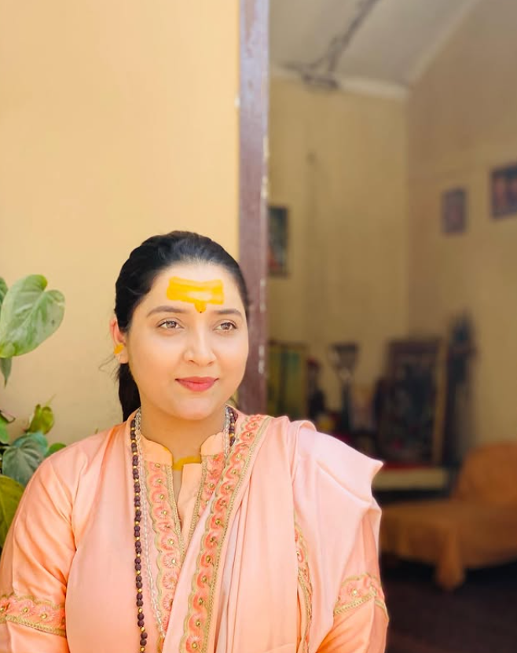
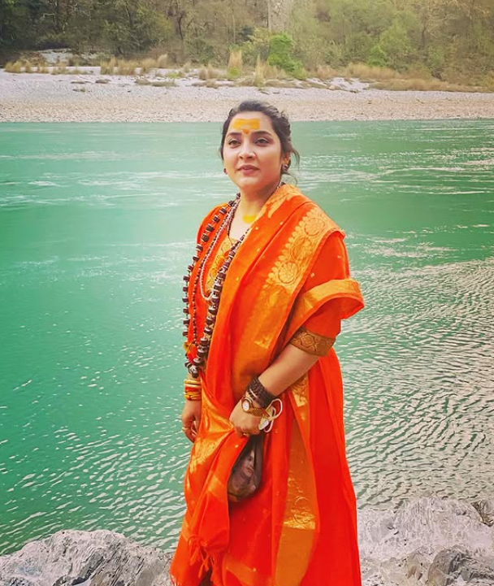
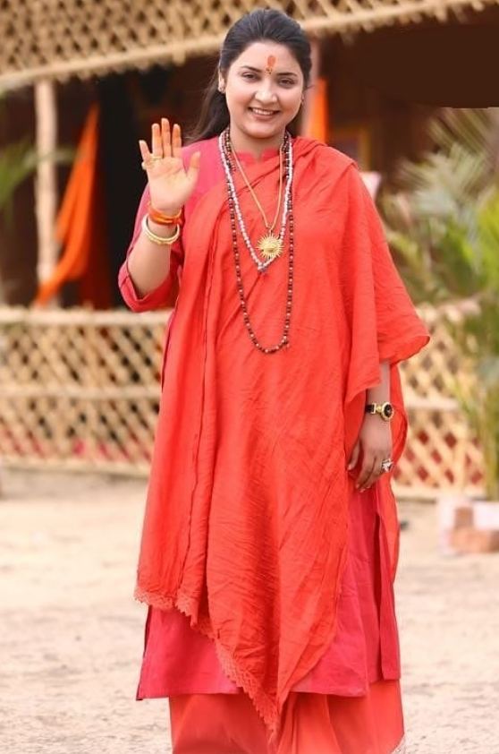

Her Holiness Sri Sri 1008 Mahamandaleshwar
Devi Maa Shivanginand Giri Ji
Her Holiness Sri Sri 1008 Mahamandaleshwar Devi Maa Shivanginand Giri Ji is a revered spiritual leader of Shri Panchdashnam Juna Akhara, Ujjain. A writer, social worker, environmental guardian, and compassionate soul, she renounced worldly life at the age of 21 to dedicate herself to yoga, yajna, Ayurveda, and environmental protection.
She is the Founder of the Environment Protection, Yoga, Yajna and Ayurveda Conservation Trust and leads several welfare initiatives from her Bhopal Ashram.
Her major works include the Kashmir-to-Kanyakumari Environmental Foot March, 1008 and 108 Kundiya Yajnas, and youth motivation programs. She has been honored with several prestigious national recognitions for her service and devotion.
Glimpses of Grace


